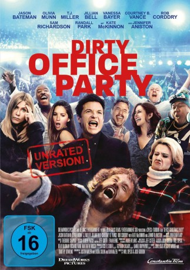

gesehen am 07.05.2017
gesehen am 07.05.2017Alternativ: Office Christmas Party gesehen am 07.05.2017
 
 IMDB-Wertung: 5.8 / 10
IMDB-Wertung: 5.8 / 10  Metascore:
Metascore: 
Als die knallharte Unternehmerin Carol (Jennifer Aniston) kurz vor Weihnachten ankündigt, die Niederlassung ihres partyhungrigen Bruders Clay (T.J. Miller) schließen zu wollen, muss Clay eine epische Büro-Weihnachtsfeier schmeißen, um einen potentiellen Kunden zu beeindrucken und die Jobs so doch noch zu retten. Er schnappt sich den Technischen Direktor Josh (Jason Bateman) und die IT-Managerin Tracey (Olivia Munn), die mit der Organisation betraut werden. Aber das große Fest läuft völlig aus dem Ruder – es wird bis zur Besinnungslosigkeit gesoffen, auf dem Parkplatz wird wild rumgevögelt, ein Rentier trinkt aus der Toilette, einige der Partygäste überleben nur knapp und am nächsten Morgen sieht es aus, als hätte mehr als nur eine Bombe in dem Bürokomplex eingeschlagen…
Jahr: 2016
Dauer: 111 Minuten
FSK: 12
Land: USA Studio: Paramount PicturesTonspuren: DTS - ,
Untertitel: Deutsch, Englisch,
Auflösung: 1080p (1920x808) Größe: 5509 MB
Genre: Komödie, Weihnachten
Regisseur: Josh Gordon, Will Speck
Drehbuch: Bernard Malamud
Soundtrack:
Darsteller:
 Jason Bateman als Josh Parker
Jason Bateman als Josh Parker Olivia Munn als Tracey Hughes
Olivia Munn als Tracey Hughes T.J. Miller als Clay Vanstone
T.J. Miller als Clay Vanstone Jennifer Aniston als Carol Vanstone
Jennifer Aniston als Carol Vanstone Kate McKinnon als Mary
Kate McKinnon als Mary Courtney B. Vance als Walter Davis
Courtney B. Vance als Walter Davis Jillian Bell als Trina
Jillian Bell als Trina Rob Corddry als Jeremy
Rob Corddry als Jeremy Vanessa Bayer als Allison
Vanessa Bayer als Allison Randall Park als Fred
Randall Park als Fred Sam Richardson als Joel
Sam Richardson als Joel Karan Soni als Nate
Karan Soni als Nate Jamie Chung als Meghan
Jamie Chung als Meghan Abbey Lee als Savannah
Abbey Lee als Savannah Oliver Cooper als Drew
Oliver Cooper als Drew Matt Walsh als Ezra
Matt Walsh als Ezra Ben Falcone als Doctor
Ben Falcone als Doctor Adrian Martinez als Larry
Adrian Martinez als Larry Erick Chavarria als Alan
Erick Chavarria als Alan Michael Tourek als Alexei
Michael Tourek als Alexei Vince Pisani als Airline Concierge
Vince Pisani als Airline Concierge David Kallaway als Huge Doorman
David Kallaway als Huge Doorman Joshua Mikel als Destructive Party Crasher
Joshua Mikel als Destructive Party Crasher Deja Dee als Nurse #1
Deja Dee als Nurse #1 Brooke Jaye Taylor als Nurse #2
Brooke Jaye Taylor als Nurse #2Datei: X:\2016(A-F)\Dirty Office Party (2016, FSK12, 1920x808).mkv seit 10.03.2017
Festplatte: HD 2016(A-Z)
 Es gibt insgesamt 147 Filme in der Gruppe '2016(A-F)'
Es gibt insgesamt 147 Filme in der Gruppe '2016(A-F)'